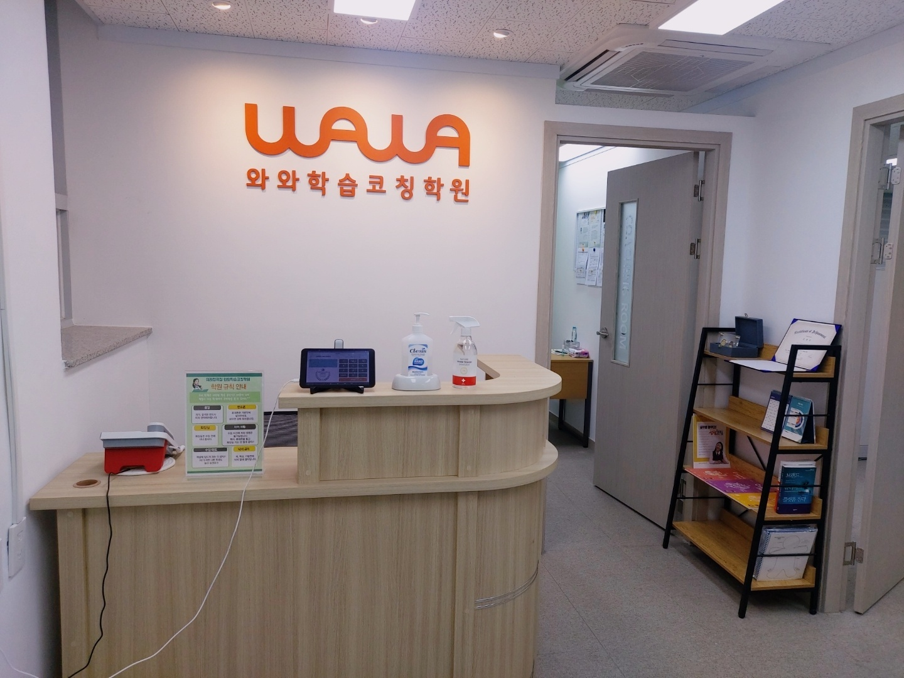
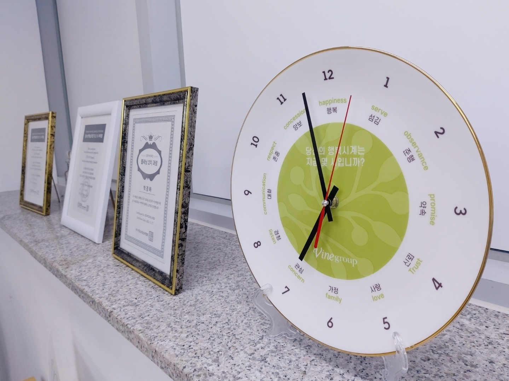
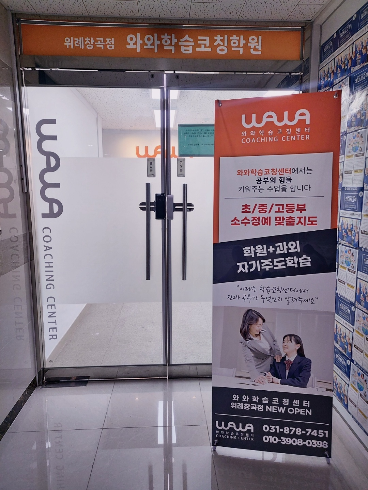

안녕하세요, 경기 성남시 수정구 창곡동의 와와학습코칭 위례창곡점입니다. 위례신도시 위례동로에 있는 센터로, 위례푸른초등학교(위례푸른초)·위례고운초등학교(위례고운초)·위례한빛초등학교(위례한빛초) 아이들이 가까이에서 오가는 동네에 있습니다.
오늘은 상담을 오신 학부모님들께 가장 자주 듣는 말 한마디로 시작하려 합니다. "집에서 두 시간은 앉아 있는데, 왜 진도가 안 나갈까요?"
앉아 있던 시간과 공부한 시간
이 질문에는 이미 답이 절반쯤 들어 있습니다. 앉아 있던 시간을 공부한 시간으로 세고 계신 것입니다. 두 개는 같은 말이 아닙니다.
아이가 책상에 앉아 있는 두 시간을 쪼개 보면 대개 이런 모양입니다. 책과 필통을 꺼내는 데 몇 분, 어느 과목부터 할지 고르는 데 몇 분, 지우개를 찾는 데 몇 분, 물을 마시러 나갔다 오는 데 몇 분. 그리고 문제 몇 개를 풀다가 막히면 막힌 자리에서 그냥 멈춰 있는 시간이 또 한참입니다.
그 사이 손이 실제로 움직인 시간은 두 시간의 절반이 안 되는 경우가 흔합니다. 아이가 게으른 것이 아닙니다. 시간을 재는 단위가 '몇 시간 앉았나' 하나뿐이라, 아이도 부모님도 그 안이 어떻게 생겼는지 볼 방법이 없었을 뿐입니다.
그래서 이런 대화가 반복됩니다. 아이는 "두 시간 했는데요"라고 하고, 부모님은 "그런데 왜 이것밖에 못 했어?"라고 하십니다. 두 분 다 거짓말을 하고 있지 않습니다. 서로 다른 것을 세고 있을 뿐입니다.
위례창곡점에서 시간을 재는 방식
위 사진은 센터에 들어서면 바로 보이는 데스크입니다. 데스크 위에 놓인 태블릿으로 등원과 하원이 기록되고, 그 앞에는 '학원 규칙 안내'가 세워져 있습니다.
출입 기록은 출석을 확인하려고만 두는 것이 아닙니다. 아이가 센터에 머문 시간을 정확히 아는 것에서 코칭이 시작되기 때문입니다. 두 시간을 머물렀다면 그 두 시간 안에 무엇을 몇 쪽 했는지가 같이 남아야 의미가 생깁니다. 머문 시간만 남으면 집에서 하던 계산과 다를 것이 없습니다.
그래서 위례창곡점에서는 아이에게 이렇게 묻지 않습니다. "오늘 몇 시간 했어?" 대신 묻는 것은 두 가지입니다.
- "어디부터 어디까지 했어?" — 분량은 거짓말을 하지 않습니다. 쪽수는 세면 나옵니다.
- "중간에 어디서 막혔어?" — 시간이 새는 자리는 늘 막힌 문제 앞입니다. 그 지점을 알아야 다음에 손을 댈 수 있습니다.
이 두 가지를 며칠만 기록해 보면 아이 스스로 알게 됩니다. 어제는 40분에 여섯 쪽을 했는데 오늘은 같은 40분에 두 쪽밖에 못 했다면, 오늘 무슨 일이 있었는지를 아이가 먼저 떠올립니다. 야단을 치지 않아도 됩니다. 숫자가 이미 말을 하고 있기 때문입니다.

숫자 옆에 말이 적힌 시계
센터 선반에 놓인 시계입니다. 여느 시계와 다른 점이 있습니다. 1부터 12까지 숫자 옆에 단어가 하나씩 적혀 있습니다. 행복, 섬김, 정성, 약속, 신뢰, 사랑, 관심, 경청, 소통, 존중, 양보. 가운데에는 "당신의 행복시계는 지금 몇 시입니까?"라고 쓰여 있습니다.
처음 보시면 그냥 장식품 같습니다. 그런데 이 시계가 하는 말이 오늘 이야기와 정확히 겹칩니다. 시간은 숫자로만 재는 것이 아니라는 것입니다.
세 시에서 네 시까지는 누구에게나 한 시간입니다. 그 한 시간이 어떤 한 시간이었는지는 숫자가 알려 주지 않습니다. 아이의 공부도 같습니다. 한 시간을 앉아 있었다는 사실보다, 그 한 시간 안에서 막힌 문제를 붙들고 다시 해 봤는지가 결과를 만듭니다.
옆에 함께 세워져 있는 것은 코치 과정 이수 인증서들입니다. 아이를 맡은 선생님이 어떤 훈련을 거쳤는지를 잘 보이는 자리에 두는 것도 같은 맥락입니다. 기록으로 남길 수 있는 것은 남겨 두자는 쪽입니다.

'학원 + 과외'라고 적어 둔 이유
센터 출입구입니다. 옆에 세워진 배너에는 "학원 + 과외 자기주도학습", "초/중/고등부 소수정예 맞춤지도"라고 적혀 있습니다.
이 문구를 시간 이야기와 이어서 보시면 뜻이 분명해집니다. 아이마다 시간이 새는 자리가 다르기 때문입니다.
어떤 아이는 시작이 늦습니다. 앉기까지 20분이 걸립니다. 이 아이에게 필요한 것은 문제 풀이가 아니라, 앉자마자 할 첫 한 가지를 미리 정해 두는 습관입니다. 어떤 아이는 막히면 멈춥니다. 모르는 문제 하나 앞에서 30분을 보냅니다. 이 아이에게는 "5분 해 보고 안 되면 표시하고 넘어가라"는 규칙이 먼저입니다. 또 어떤 아이는 끝내고도 확인을 안 합니다. 다 풀었다는 말과 다 맞혔다는 말을 같은 뜻으로 씁니다.
세 아이가 같은 교실에서 같은 진도를 나가면, 세 가지 문제 중 어느 것도 고쳐지지 않습니다. 앞에서 설명하는 사람에게는 세 아이가 똑같이 '앉아 있는 아이'로 보이기 때문입니다. 소수정예로 보는 이유가 여기에 있습니다. 진도를 빨리 빼기 위해서가 아니라, 아이마다 시간이 새는 지점이 눈에 보여야 하기 때문입니다.
위례창곡점은 초등부터 고등까지 함께 보고 있습니다. 다만 시간을 쓰는 방식은 초등 때 굳어집니다. 중학교에 올라가 과목 수가 한 번에 늘었을 때, 이미 자기 시간을 재 본 아이와 그렇지 않은 아이는 같은 두 시간으로 전혀 다른 양을 해냅니다.
집에서 오늘부터 해 보실 수 있는 것
- 시계 대신 쪽수를 세어 보세요 — "몇 시간 했어?"를 "몇 쪽 했어?"로 한 번만 바꿔 보십시오. 시간은 부풀릴 수 있지만 쪽수는 부풀릴 수 없습니다. 일주일만 적어 보셔도 아이의 평소 속도가 보입니다.
- 타이머를 벌이 아니라 도구로 쓰세요 — "30분 안에 끝내"가 아니라, 25분 동안 해 보고 몇 쪽 나왔는지 같이 세어 보는 식입니다. 아이가 시간에 쫓기는 게 아니라 자기 속도를 재는 경험이 되어야 합니다.
- 막힌 문제에는 표시를 하고 넘어가게 하세요 — 모르는 문제 하나를 붙들고 보내는 20분이 아이 공부 시간을 가장 크게 갉아먹습니다. 별표 하나 그리고 다음으로 넘어간 뒤, 남은 문제를 다 푼 다음 돌아오는 순서를 정해 주십시오.
위례창곡점 찾아오시는 길
와와학습코칭 위례창곡점은 경기 성남시 수정구 위례동로 141, 우성메디피아 401호에 있습니다. 건물 4층이고, 위례푸른초등학교·위례고운초등학교·위례한빛초등학교 아이들이 가까이에서 오갈 수 있는 위례신도시 안쪽입니다.
학습 진단과 상담은 무료입니다. 오실 때 아이가 요즘 풀고 있는 문제집을 한 권 들고 오시면, 아이가 한 시간에 어느 정도를 소화하는지부터 함께 재 보실 수 있습니다.